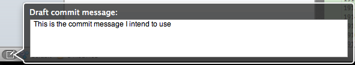

Repository Window: Draft commit message
If you're not ready to commit yet, but you'd like to start drafting the message
that you will use when you do finally commit, you can do so by using the draft commit message feature. This is available by either clicking on the icon at the bottom-left of the
repository window, or pressing Cmd-Shift-D.

The draft commit message is saved alongside your repository so that when you come to do the final commit, it is pre-populated with the message you already drafted, even if you've closed and re-opened SourceTree in between.
See also
The Toolbar
The Sidebar and Footer
The File Status View
The Log View
The Search View
Repository Settings
Submodules and Subrepositories